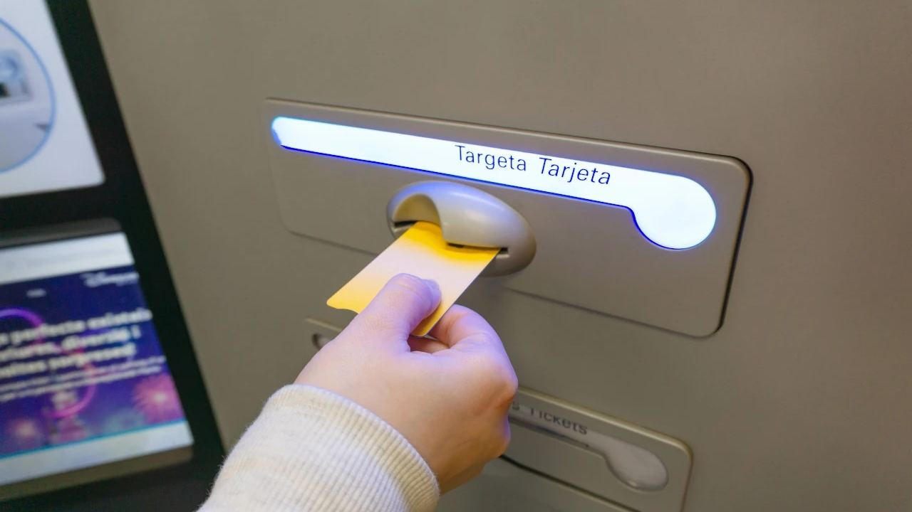

Owning in Spain · Practical
Banks in Spain: How to Open an Account
 By Anita Orłowska · · updated · 5 min read
By Anita Orłowska · · updated · 5 min read
In short: You do not need a Spanish bank account to buy a property, but almost every owner opens one: it is the easiest way to pay electricity, water, IBI and community fees by direct debit, and a Spanish mortgage requires one. Non-residents open a non-resident account with a passport, an NIE and proof that they live abroad, and the bank will ask where your money comes from. Accounts often carry a monthly fee unless you meet conditions. Deposits are protected up to €100,000 per person per bank. If you live in another EU country, interest from a Spanish account is generally exempt from Spanish tax.
A Spanish account makes owning a home in Spain much simpler, and it is usually one of the first things we help buyers with. Here is how it works and what to prepare.
Do you need a Spanish bank account?
It is not legally required, and since EU rules ban "IBAN discrimination", companies should accept direct debits from any euro account in the SEPA area. In practice a Spanish account is still much easier for:
- paying electricity, water, internet, IBI and community fees by direct debit,
- receiving rent from tenants or holiday guests,
- taking a Spanish mortgage, which always comes with an account at the lending bank,
- paying local tradespeople, a cleaner or a property manager.
Non-resident, resident and basic accounts
- Non-resident account (cuenta de no residente): for owners whose tax home is outside Spain. The bank records you as non-resident, so it does not withhold Spanish tax on interest where you are exempt.
- Resident account: once you are tax resident in Spain, you tell the bank and the account is converted. Banks usually offer better terms to residents, especially if your salary or pension is paid in.
- Basic payment account (cuenta de pago básica): anyone legally resident in the EU has the right to one, with a fee capped at €3 a month covering the card, cash withdrawals and up to 120 euro payments a year. It is a useful fallback if a bank is slow to accept you.
Not sure which applies to you? Read resident or non-resident.
Documents you need
| Non-resident | Resident |
|---|---|
| Valid passport or EU ID card | Passport or ID card and TIE or EU registration certificate |
| NIE number (most banks ask for it) | NIE |
| Proof of address abroad and a certificate of non-residence or tax residence certificate from your country | Spanish address, e.g. rental contract or padrón |
| Proof of income: payslips, pension statement, tax return or company accounts | Employment contract, payslips or pension statement |
| Source of the funds you will deposit | Source of funds for large deposits |
Requirements vary by bank and branch. Documents in other languages may need a sworn translation.
How to open the account, step by step
- Choose a bank. In coastal towns, branches of the large banks often have an international desk with English-speaking staff.
- Book an appointment or start online. Many banks let residents open fully online; non-residents often still need to sign at a branch or by video call.
- Answer the anti-money-laundering questions: your job, income, why you need the account and where the money comes from. This is a legal requirement, not distrust.
- Sign the contract and receive online banking access, usually within days. The card follows by post or at the branch.
- Set up direct debits for utilities, IBI and community fees once you own the property.
If you buy through us, we can introduce you to a branch used to working with foreign buyers.
Fees and how to avoid them

Spanish banks commonly charge a monthly account fee unless you meet conditions, such as paying in a salary or pension, a minimum monthly deposit, a number of card payments or holding other products. Non-resident accounts are often charged more. Also look at:
- fees for international transfers and for cash withdrawals at other banks' machines,
- card fees,
- exchange rates if your income is not in euros.
Ask for the fee sheet before you sign. For moving larger sums from pounds, francs or other currencies, a currency specialist or a digital bank usually offers a better rate than a traditional bank.
Which banks?
The largest banks are CaixaBank, Santander, BBVA, Sabadell and Bankinter, with Unicaja strong in Andalusia. All have many branches on the Costa Blanca and Costa del Sol and English-language apps. ING and other online banks are cheaper but may not open non-resident accounts. Digital providers such as Wise or Revolut are handy for card payments and currency exchange, but some utilities, town halls or lenders still prefer a traditional Spanish account. Many owners keep one of each.
Spanish bank deposits are protected up to €100,000 per depositor per bank by the Fondo de Garantía de Depósitos.
Paying for a property
The money for the purchase is usually sent to your lawyer's client account or paid at the notary by bank transfer or banker's draft (cheque bancario). The notary records in the deed how every payment was made, and cash cannot be used for the price. Keep the transfer confirmations: they prove where the money came from and you will need them when you sell. See how to buy in Spain for the full process.
Bank accounts and tax
- Non-residents living in the EU: interest from a Spanish account is generally exempt from Spanish tax. Give the bank your tax residence certificate so it does not withhold tax.
- Non-residents from outside the EU: interest is taxed at 19%, or a lower rate under a tax treaty.
- Spanish residents: interest is taxed with other savings income at 19% to 30%. Foreign accounts worth more than €50,000 in total must be reported on form 720.
- Your home country: you will usually have to declare a Spanish account and its interest there as well. Ask your tax adviser.
Frequently asked questions
Can a non-resident open a bank account in Spain?
Yes. You open a non-resident account with your passport, usually an NIE, proof of address and income abroad, and information on where your money comes from.
Do I need a Spanish bank account to buy a property?
No, but it makes paying utilities, IBI and community fees much easier, and a Spanish mortgage always requires one.
Are Spanish bank accounts free?
Often not. Most banks charge a monthly fee unless you meet conditions such as paying in a salary or pension. EU residents have the right to a basic payment account with a fee of at most €3 a month.
Is my money safe in a Spanish bank?
Deposits are guaranteed up to €100,000 per depositor per bank by the Spanish deposit guarantee fund.
Do non-residents pay tax on Spanish bank interest?
Residents of other EU countries are generally exempt in Spain. Others pay 19% or a lower treaty rate. You may also have to declare the interest at home.
We help with the paperwork
Opening an account, getting your NIE and setting up direct debits are part of the help we give every buyer. Contact us to start.
Sources: Banco de España – basic payment account · Fondo de Garantía de Depósitos · Agencia Tributaria – non-resident taxation of interest